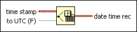

Seconds To Date/Time Function
Owning Palette: Timing VIs and Functions
Requires: Base Development System
Converts a timestamp value or a numeric value to a cluster of time values.
This function loses fractional seconds of precision when converting the timestamp. If you convert date time rec back into a time stamp, the timestamp may not display the exactly correct value.

 Add to the block diagram Add to the block diagram |
 Find on the palette Find on the palette |